Префектура Оита · Усуки · еда
Кухня Усуки: город мисо, соевого соуса и бережливых блюд, который ЮНЕСКО признало за гастрономию
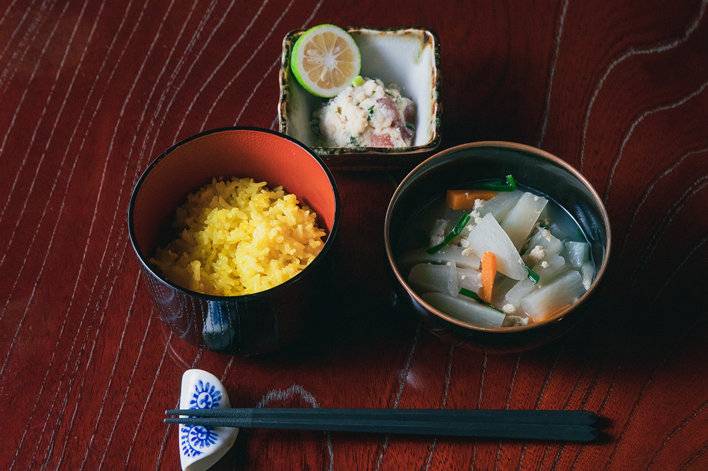
Усуки, тихий портовый город на юго-востоке префектуры Оита, в 2021 году вошёл в сеть творческих городов ЮНЕСКО в области гастрономии. Его кухню сделали мисо и соевый соус, которые здесь варят больше 400 лет, бережливые блюда эпохи голода и поля без химических удобрений.
Город
Вода, море и 400 лет брожения
Усуки стоит на юго-восточном берегу префектуры Оита, у залива Усуки, который выходит к проливу Бунго. С одной стороны море, с другой плодородная земля и лесистые горы, а из гор текут чистые родники. Тёплый климат, хорошая вода и богатое море дали городу собственную кухню.
В 2021 году Усуки приняли в сеть творческих городов ЮНЕСКО в области гастрономии. Отметили три вещи: культуру брожения и пивоварения, земледелие, которое бережёт природу, и традиционные блюда.
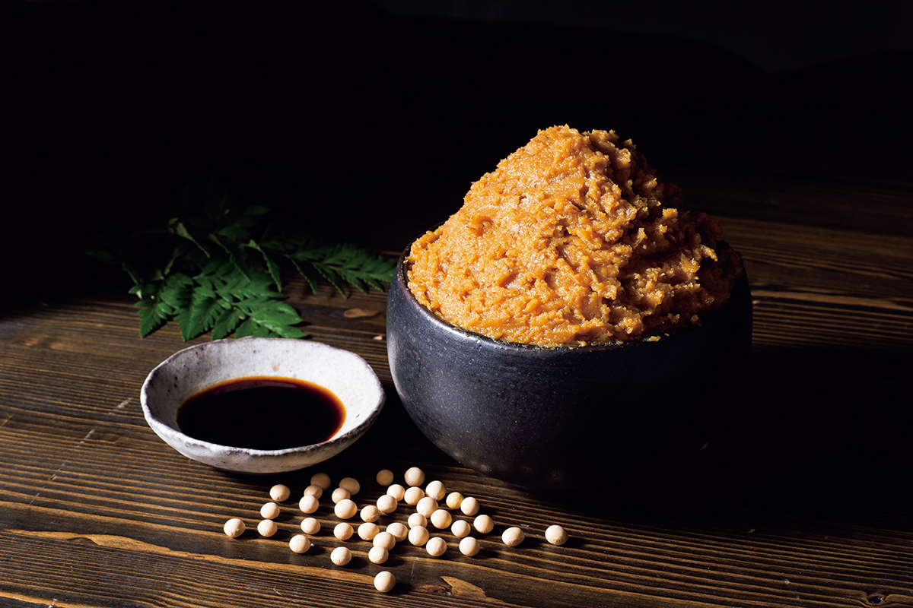
Мисо и соевый соус в Усуки производят в объёмах, которыми мало какой город Японии может похвастаться. Варить их начали в начале эпохи Эдо, а в конце той же эпохи появились и сакэварни. Сакэ и сётю из местного сырья, мисо и соус делают по способам, которым больше 400 лет, вместе с невидимыми глазу микроорганизмами. Это основа всей здешней еды, и сегодня брожение стало для города главной отраслью.
Бережливость
Охан, кирасу-мамэси и каяку
В конце эпохи Эдо страну поразил великий голод годов Тэмпо, а княжество Усуки провело собственные реформы Тэмпо. Главным правилом жизни стала строгая экономия, и горожане придумывали блюда из того, что было под рукой. Эти блюда в семьях передавали из поколения в поколение.
Охан это рис, сваренный в воде, окрашенной в жёлтый цвет плодами гардении. В голодные годы его ели вместо праздничного красного риса с фасолью, а потом готовили по торжественным случаям и в конце года. Охан всегда подают в паре с каяку, густым супом из белой рыбы, овощей и тофу, похожим на суп кэнтин.
Есть и версия, что у охан европейские корни. В XVI веке замок Усуки построил князь Сорин Отомо (1530–1587), правитель провинции Бунго, известный ещё и тем, что принял христианство. Он охотно перенимал всё, что привозили португальские купцы и миссионеры, в том числе и еду. Говорят, жёлтый рис пошёл от паэльи, которую привезли миссионеры.
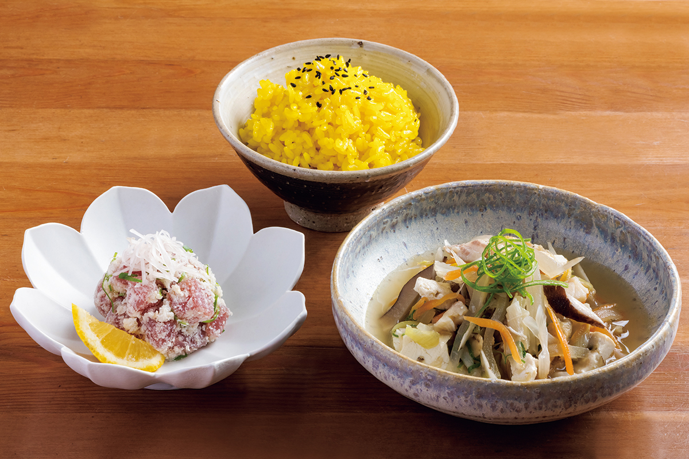
Самое бережливое блюдо называется кирасу-мамэси. На местном диалекте «кирасу» значит окара, жмых, который остаётся при изготовлении тофу, а «мамэси» значит обвалять. Обрезки сашими и мясо, снятое с хребта после разделки рыбы, обваливают в окаре, и порция становится больше. Ещё одно старое блюдо называется тядай-дзуси: на рис кладут привычные овощи и другие простые продукты так, чтобы суши выглядели нарядно. Всё это до сих пор едят в городских столовых, а в супермаркетах продают в отделах готовой еды.
Хондзэн-рёри и постная кухня храмов
В Усуки сохранилась и хондзэн-рёри, торжественная трапеза на отдельных подносах. Она сложилась в эпоху Муромати, и её считают прообразом всей японской кухни. Попробовать её сегодня можно всего в трёх местах страны, и одно из них ресторан фугу и японской кухни «Киракуан», открытый в 1878 году.
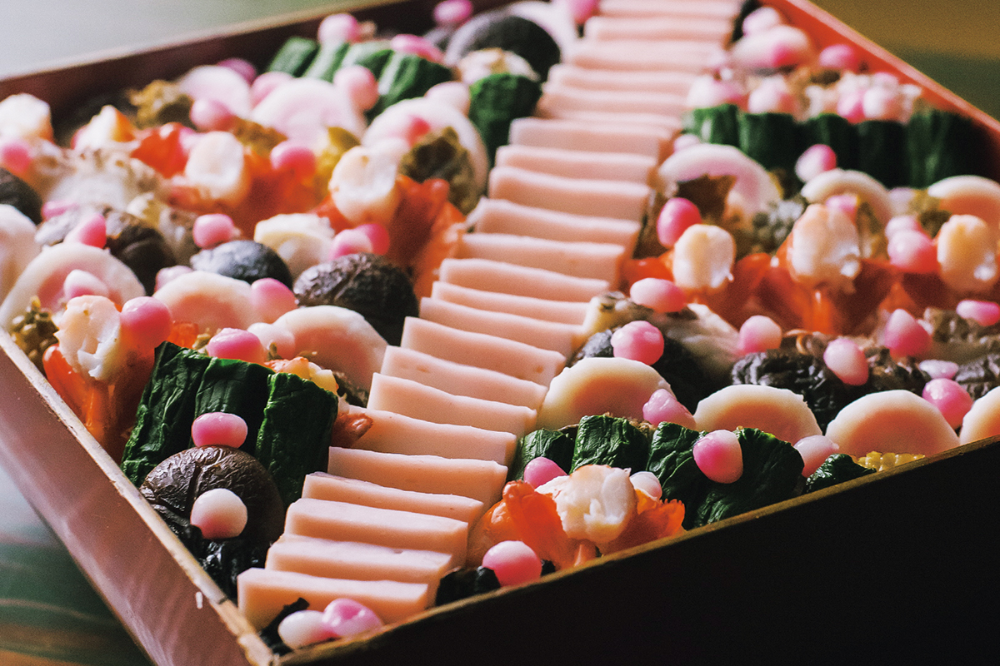
В постной храмовой кухне сёдзин-рёри Усуки чувствуется дзэнский опыт настоятелей. Кунжутный тофу готовят из кунжута, который перетирают целый час, а пшеничную клейковину нама-фу вымешивают из муки с высоким содержанием белка.
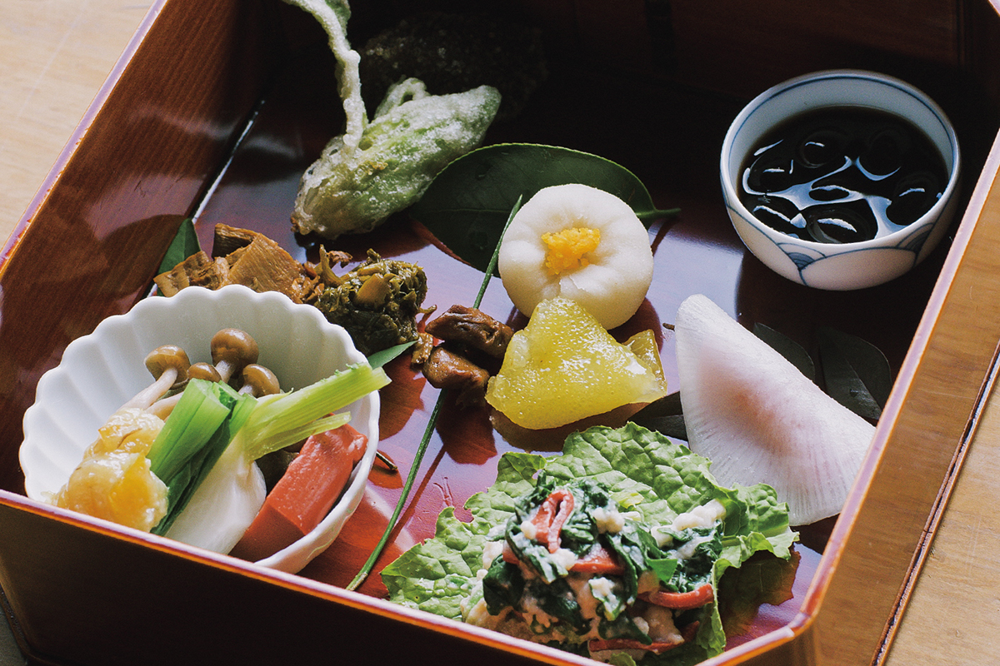
Отдел гастрономического города Усуки
- Телефон
- +81 972-72-1092
Обед
Местная кухня у мастеров мисо и соевого соуса
Проще всего попробовать всё сразу в столовой при «Котэгава сётэн», старом торговом доме компании Fundokin. Компания варит мисо и соевый соус с 1861 года.
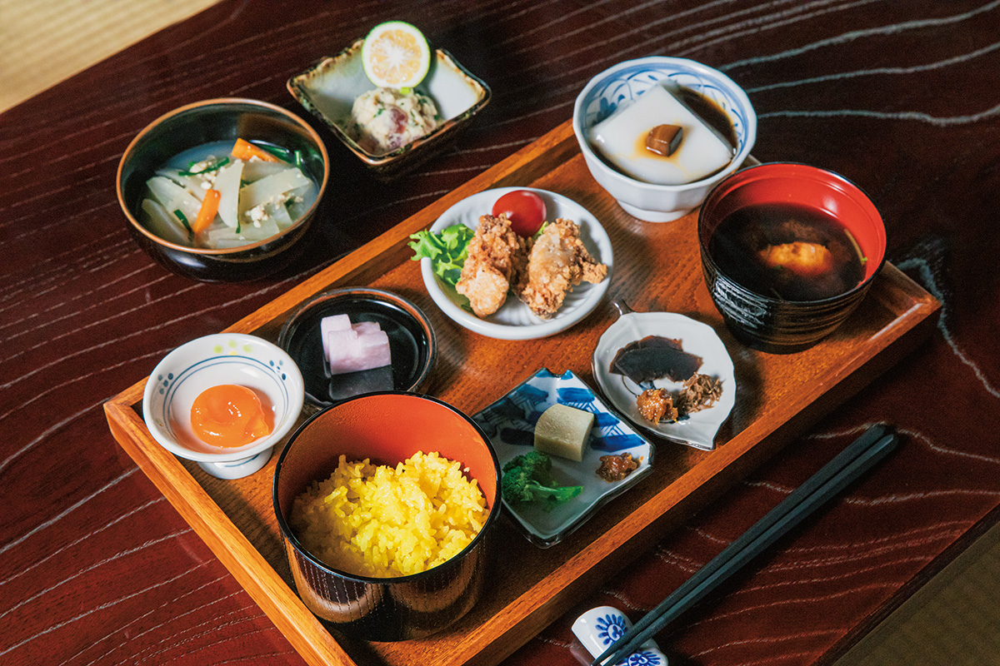
Кирасу-мамэси здесь делают из свежей окары с имбирём, зелёным луком и тунцом, маринованным в соусе, а перед едой сбрызгивают соком кабосу. В охан добавляют клейкий рис и подают его с каяку, в которой много корнеплодов. Кунжутный тофу поливают сладким соусом на бульоне из грибов сиитакэ. За одним обедом можно попробовать главные вкусы Усуки.
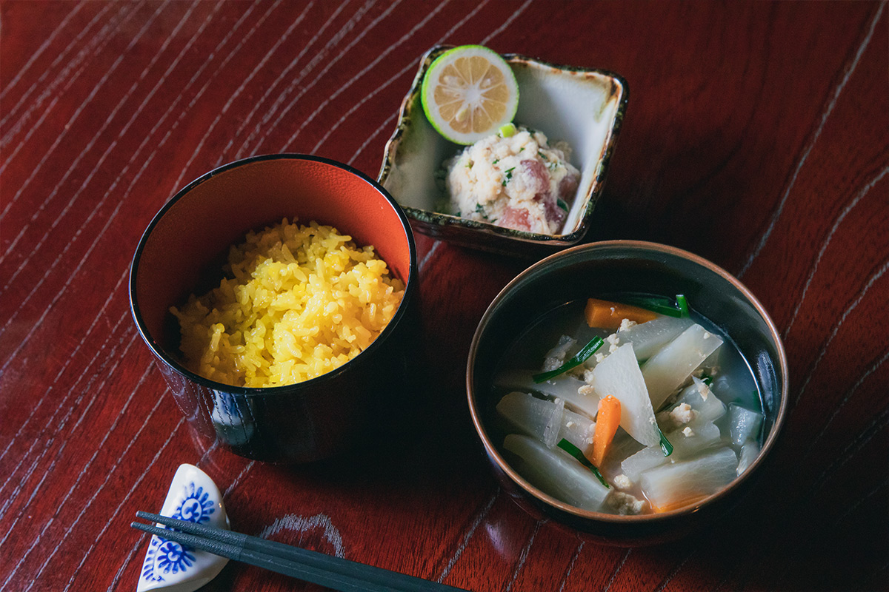
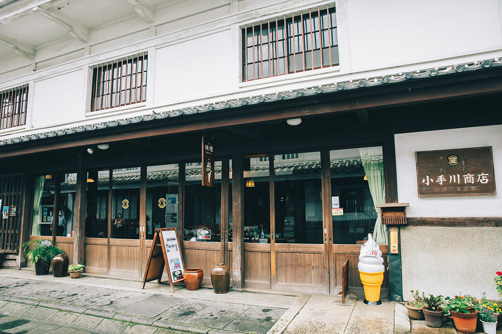
«Котэгава сётэн» (Fundokin)
- Адрес
- префектура Оита, Усуки, Усуки-Хамамати, 1
- Телефон
- +81 972-62-3333
- Часы работы
- столовая 11:00–14:00, магазин 8:30–17:00
- Выходные
- без выходных
Лавки
Мисо, кабосу, сакэ и пряники
«Кани сёю»: старейшая лавка мисо и соуса на Кюсю
Лавку основали в 1600 году, и в 2021 году её вело двенадцатое поколение семьи. Рисовый кодзи здесь делают в лавке каждый день. Из него и из продуктов, в основном из префектуры Оита, варят мисо и соевый соус, а из них делают множество товаров, которые охотно берёт молодёжь, вроде мороженого со вкусом мисо. Названия у товаров смешные, а на карточках с описаниями хватает шуток. Килограмм мисо стоил 510 иен в 2021 году, свежий рисовый кодзи продают на вес, по 1,3 иены за грамм.
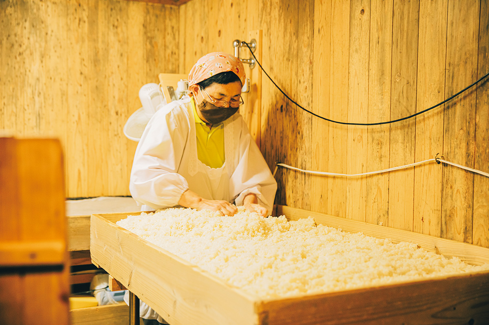
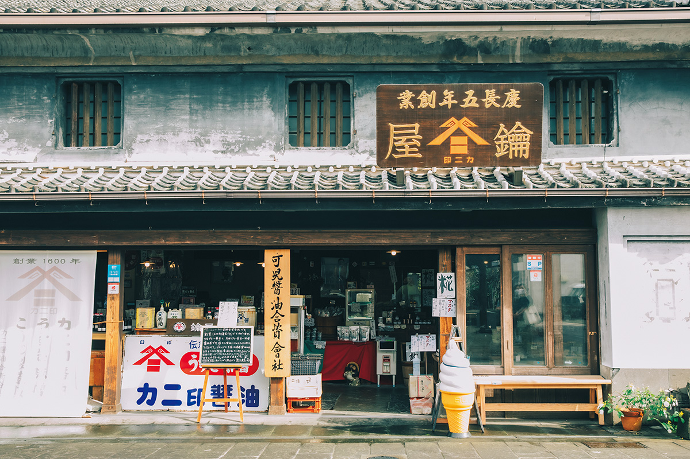
«Кани сёю»
- Адрес
- префектура Оита, Усуки, Усуки, 218
- Телефон
- +81 972-63-1177
- Часы работы
- 9:00–17:00
- Выходные
- вторник
«Кабосу кобо»: жёлтые кабосу
Усуки считают родиной кабосу, кислого японского цитруса. Обычно его продают зелёным, но созревший, пожелтевший плод сочнее, а кислота у него мягче. В Усуки жёлтые кабосу издавна любили больше. Мастерская «Кабосу кобо» взялась показать их всем и делает из них продукты вручную.
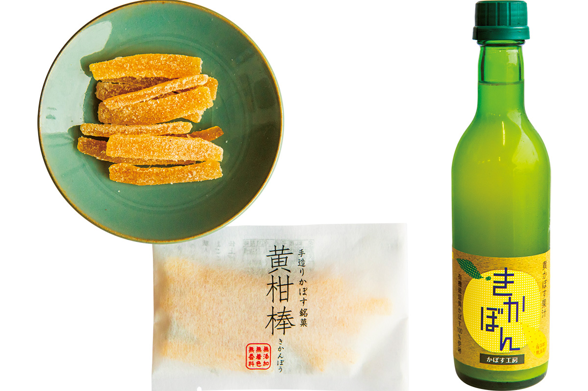
«Кабосу кобо»
- Адрес
- префектура Оита, Усуки, Усуки, 627
- Телефон
- +81 972-63-5487
- Часы работы
- 10:00–16:00
- Выходные
- вторник
Kuge Honten: сакэ, сётю и «пьяная» желтохвостка
Kuge Honten делает сакэ и сётю. В 2021 году винокурня объявила, что переводит всё сырьё, рис для сакэ, ячмень и батат, на продукцию префектуры Оита. Тогда же она вместе с рыбным хозяйством «Усуки кайсан» задумала кормить выращенную в садках желтохвостку сакэ-касу, жмыхом, который остаётся после отжима сакэ. Жмых брали от сакэ «USUKI», сваренного только из местного риса сорта «Вакамидзу», а рыбу назвали «Усуки ёй-бури», «пьяная желтохвостка из Усуки». Её первый выход на рынок был намечен на осень 2021 года.
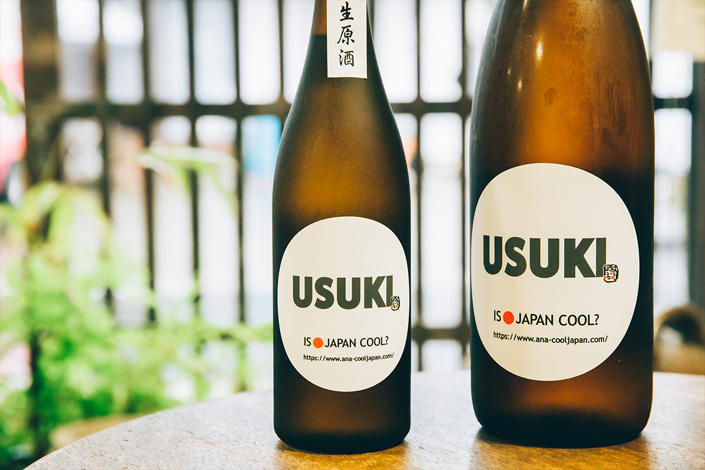
«Масуя»
- Адрес
- префектура Оита, Усуки, Усуки, 413
- Телефон
- +81 972-64-7122
- Часы работы
- 11:00–16:30
- Выходные
- понедельник, вторник, среда
- Сайт
- kugehonten.jp
«Гото сэйка»: усуки-сэмбэй с органическим имбирём
Усуки-сэмбэй это тонкий пшеничный пряник, который покрывают имбирным сиропом, нанося его кистью. Кондитерская «Гото сэйка» отметила столетие и решила многое поменять с оглядкой на устойчивое развитие. Имбирь теперь берут местный, органический, а жмых после отжима, который раньше выбрасывали, сушат в порошок и снова пускают в тесто.
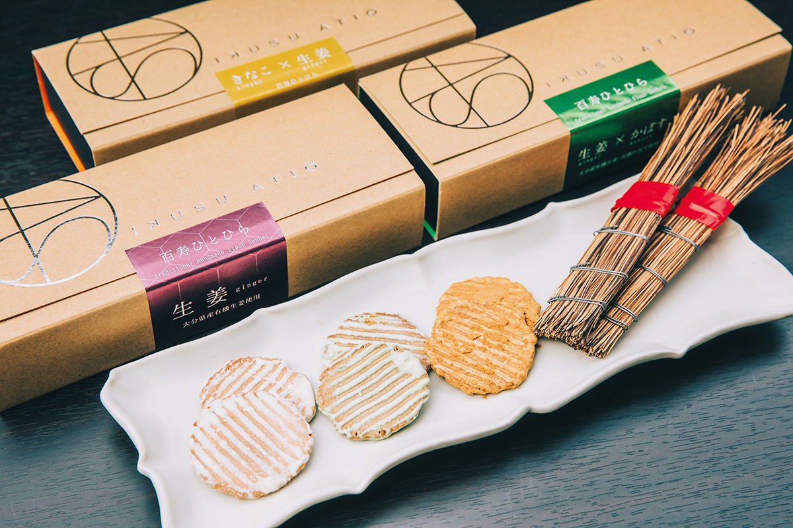
«Гото сэйка»
- Адрес
- префектура Оита, Усуки, Фуката, 118
- Телефон
- +81 972-65-3555
- Часы работы
- 9:00–16:30
- Выходные
- без выходных
Земля
Овощи хоммамон
Город одним из первых в Японии взялся за органическое земледелие всем миром. Начинается оно с почвы. В Усуки работает городской центр почвы, где делают компост «Усуки юмэ тайхи»: его готовят в основном из травы и древесины и выдерживают до полной зрелости, так что по составу он близок к лесному перегною.
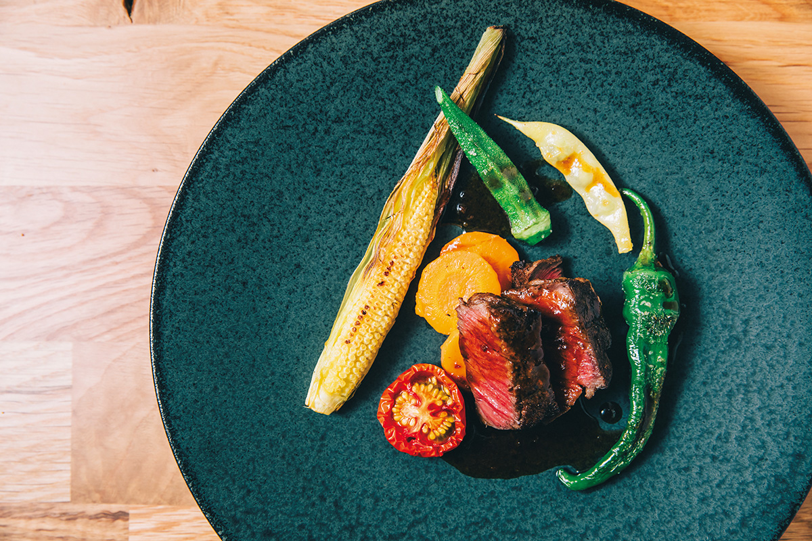
На этой основе город ввёл систему сертификации «хоммамон», то есть «настоящее». Овощи с полей, где не используют химических удобрений и синтетических пестицидов, а почву готовят зрелым компостом, сертифицирует мэр Усуки.
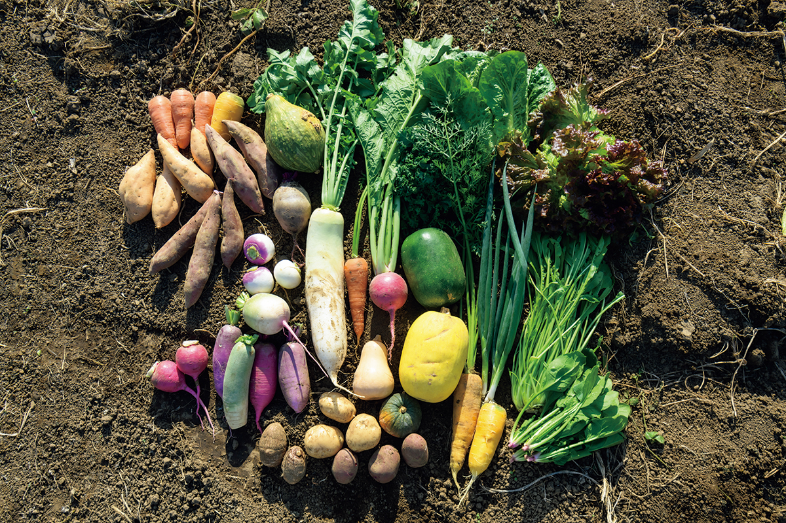
Один из фермеров, которые продвигали систему с самого начала, вспоминает, что за десять лет горожане стали куда лучше понимать, зачем нужно органическое земледелие. Овощи хоммамон идут в обеды детских садов и школ, а для детей каждый год устраивают больше 50 посадок и сборов урожая. Купить овощи можно по подписке у его фермы, в отделе местных продуктов магазина A-Coop и в «Мэгуми кобо», а попробовать в ресторанах города.
Отдельная история связана со школьными обедами. Центр школьного питания старается брать половину овощей у местных фермеров, которых знает в лицо. Около 50 хозяйств выделяют для этого уголок своего поля. Всё началось с просьбы города: вырастите для обедов то, что вы сами дали бы своим детям и внукам. В меню, которое каждый месяц раздают школьникам, указан фермер для каждого овоща.
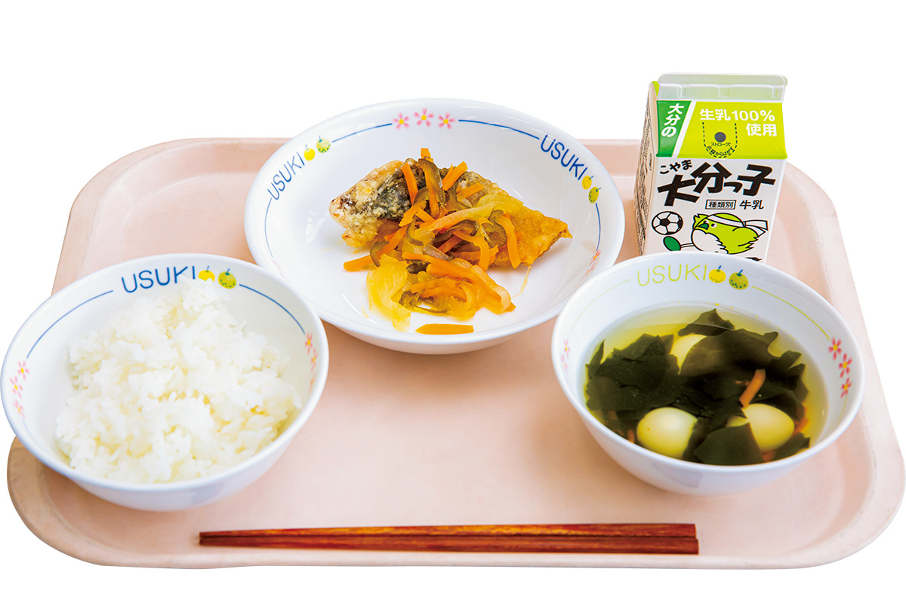
Ресторан
mikangura: французская кухня в амбаре для мандаринов
Одно из мест, где охотно готовят из овощей хоммамон, французский ресторан mikangura, открытый осенью 2020 года. Он стоит в холмистой деревенской местности в 15 минутах езды от центра Усуки, в перестроенном амбаре для мандаринов, которому около 50 лет. Шеф и владелец ресторана родом из Киото: он переехал в Усуки, и, по его словам, его покорил именно этот пейзаж.
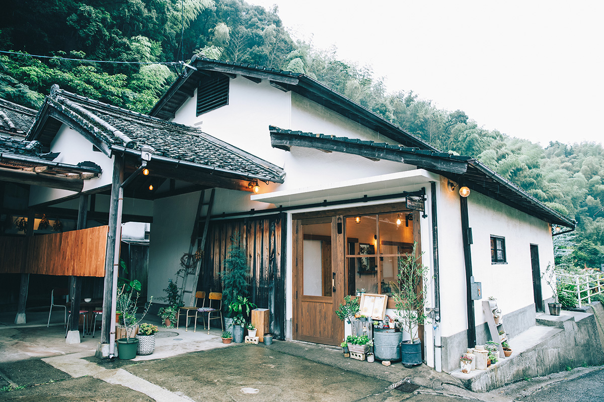
Качество овощей хоммамон поразило шефа, и он часто сам ездит к фермерам за сезонными овощами. Меню курсов меняется каждый месяц, и вкус овощей в нём на первом плане.
«Фермеры выращивают овощи хоммамон с гордостью. Вкус у них густой, с характером, поэтому я почти ничего с ними не делаю и готовлю как можно проще»
шеф mikangura
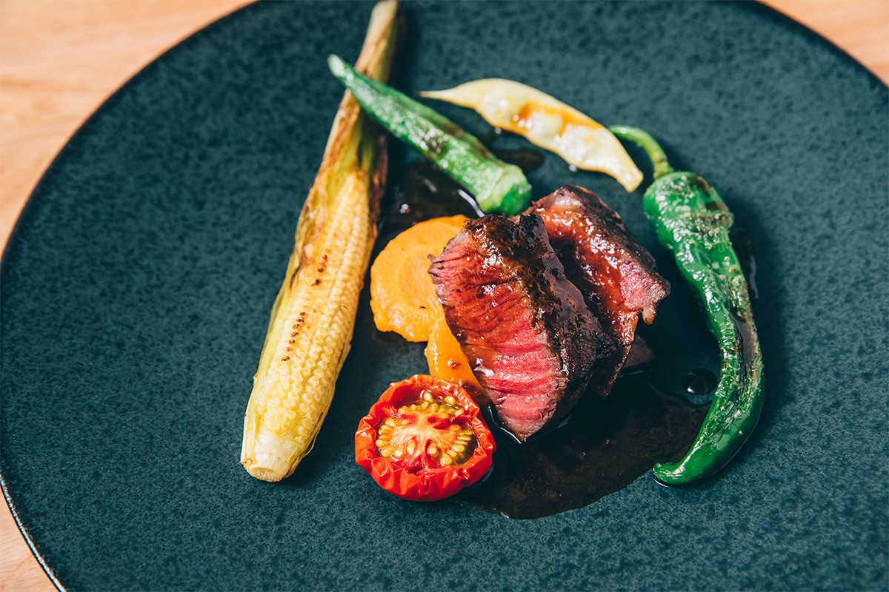
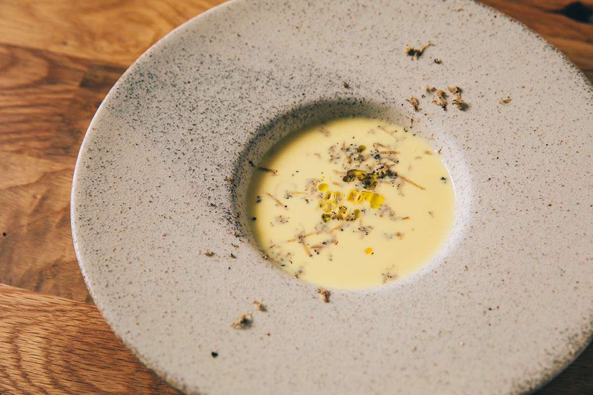
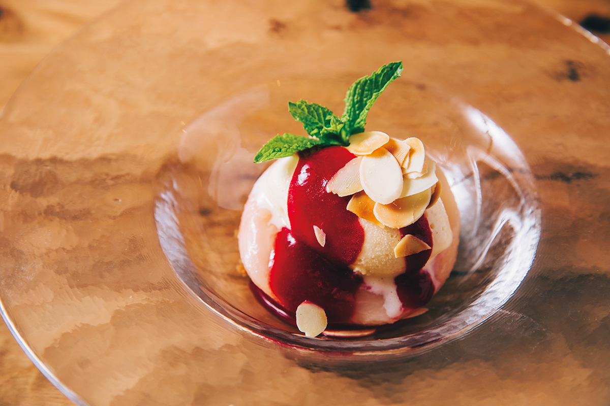
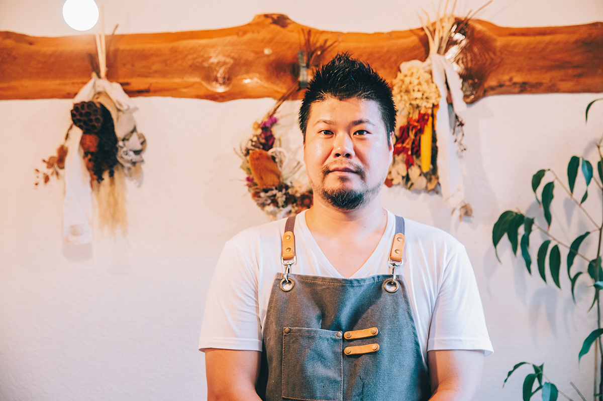
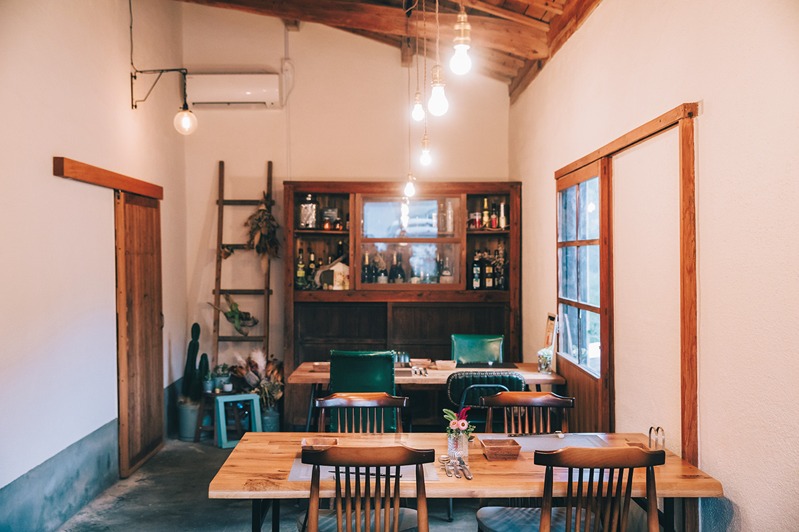
mikangura
- Адрес
- префектура Оита, Усуки, Фудзигоути, 1996
- Телефон
- +81 972-72-1284
- Часы работы
- 11:00–14:30, 17:30–21:30
- Выходные
- среда
Магазин
«Мэгуми кобо»: овощи хоммамон в банках
В «Мэгуми кобо» продают сезонные овощи хоммамон и продукты ручной работы из местного сырья: фруктовые соусы, овощи, маринованные в сакэ-касу, сладкий засахаренный батат. Добавок здесь стараются не использовать, чтобы чувствовался вкус самого продукта. Мармелад из летнего кабосу получил золотую медаль японского отбора всемирного конкурса мармелада Dalemain. В 2021 году банка стоила 756 иен, с розмарином 864 иены.
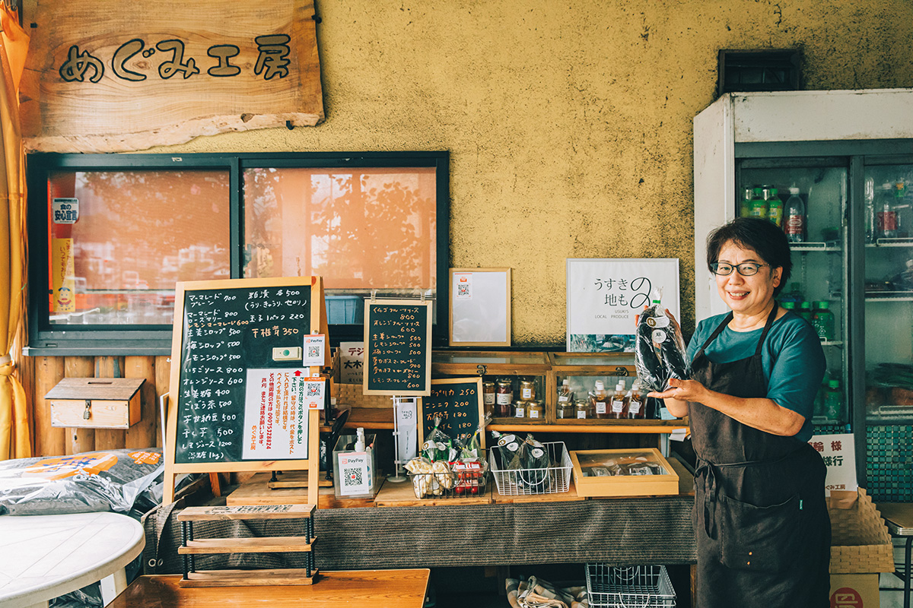
«Мэгуми кобо»
- Адрес
- префектура Оита, Усуки, Усуки, 56-1
- Телефон
- +81 972-83-7753
- Часы работы
- 9:00–17:00
- Выходные
- суббота, воскресенье, праздники
Фото: Майко Фукуи.